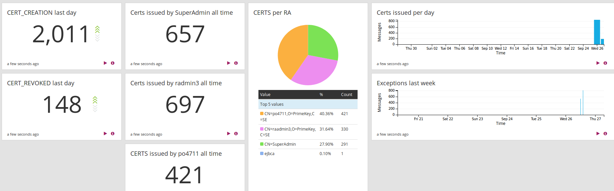

Integrating EJBCA with Graylog
Graylog can consume syslog, and other log formats. The following sections list steps required to send syslog traffic to Graylog and configure it to visualize some interesting statistics.
Install Graylog
The first step is to install Graylog. You can get started quickly for testing by starting up a machine in AWS using the AMI, using the OVA VM, or using Docker containers. For more information, refer to the Graylog documentation on Download & Install Graylog.
Enable Syslog TCP input
This example uses syslog over TCP. To enable using syslog TCP input in Graylog, do the following:
Go to the Graylog Web Console and select System > Input.
Select Syslog TCP in the Select Input list-menu and click Launch new input.
Configure EJBCA Logging
On the EJBCA server, configure WildFly to send messages to Graylog with syslog TCP. This is done by adding the following section in the logging subsystem in the JBoss/WildFly standalone.xml:
<syslog-handler name="SYSLOGTCP" enabled="true"> <level name="INFO"/> <hostname value="my.host"/> <app-name value="WildFly"/> <server-address value="my.graylog.server"/> <port value="514"/> <facility value="local-use-1"/></syslog-handler>You also need to configure the root-logger to use the new handler, this will start sending the same logs to syslog. Add the new handler by modifying the root-loggers section in standalone.xml:
<root-logger> <level name="INFO"/> <handlers> <handler name="CONSOLE"/> <handler name="FILE"/> <handler name="SYSLOGTCP"/> </handlers></root-logger>You can limit the logging further to only include the audit log, by configuring to only send events from org.cesecore.audit.impl.log4j.Log4jDevice to the syslog handler. This may be good if your main interest is statistics, but you will then miss things like Exceptions in the log.
Send some log items by performing an action in the EJBCA Admin UI, for example saving a certificate profile.
Create Graylog Extractors
Graylog Extractors are used to extract fields, that can be used in queries in Graylog, from the log stream. Create extractors for your log input under System > Input in the Graylog Web Console.
You can analyze log items and create the extractors you need. In our example, the following extractors are created:
RADN: An administrators DN who issued a certificate, for example 'CN=RA Admin,O=PrimeKey,C=SE'
Extractor type: Split & Index
Split by: ;
Target index: 6
EVENT: The event that happened, for example 'CERT_CREATION'
Extractor type: Split & Index
Split by: ;
Target index: 2
CERTPROFILE: the certificate profile a certificate was issued for, for example 'certprofile=346136222'
Extractor type: Split & Index
Split by: ;
Target index: 11
CERT: the certificate issued, for example 'cert=MIIE1DCCArygAw...'
Extractor type: Split & Index
Split by: ;
Target index: 13
Condition: Only attempt extraction if field contains string 'cert='
SUBJECTDN: the subject DN a certificate is issued to, for example 'subjectdn=CN=Test1 test'
Extractor type: Split & Index
Split by: ;
Target index: 10
Condition: Only attempt extraction if field contains string 'subjectdn='
You can edit and create extractors of many different types, the above are simple examples.
Once the extractors have been created, go to EJBCA and make some actions to log something you want to visualize. For example, running the stresstest clientToolBox stress to issue a bunch of certificates, by different RAs.
Create Graylog Dashboard
Graylog dashboards allow you to build pre-defined views and visualize your data.
To create a new Graylog Dashboard, do the following:
Go to the Dashboards section and click Create dashboard to create a new dashboard called EJBCA stats.
Go to Search and create some searches for your dashboard.
Add and Visualize Searches on Dashboard
The following provides examples of search result information that you can add to your dashboard. This screenshot displays a dashboard with the search examples added and shows some sample test data:

Note that the examples may not suit your needs. For example, searching for all time may not be suitable if you have very large datasets, and will not give correct numbers if you start using Graylog when you have already run EJBCA for a while (thus it will not show all time since EJBCA was installed).
Examples of search result information to visualize:
CERT_CREATION last day
Search in the last 1 day
EVENT:CERT_CREATION
Click Add count to dashboard
CERT_REVOKED last day
Search in the last 1 day
EVENT:CERT_REVOKED
Click Add count to dashboard
Certs issued by SuperAdmin all time
Search in all messages
EVENT:CERT_CREATION AND RADN:CN=SuperAdmin
Click Add count to dashboard
Certs per RA
Search in all messages
EVENT:CERT_CREATION
Select RADN and click to expand, click Quick values, and then Add to dashboard when you see the graph.
Certs issued per day
Search in the last 30 days
EVENT:CERT_CREATION
Select Day in the Histogram and then click Add to dashboard
Exceptions last week
Search in the last 7 days
Exception
Select Hour in the Histogram and then click Add to dashboard
You can now go to your dashboard and rearrange the widgets using Unlock/Edit.